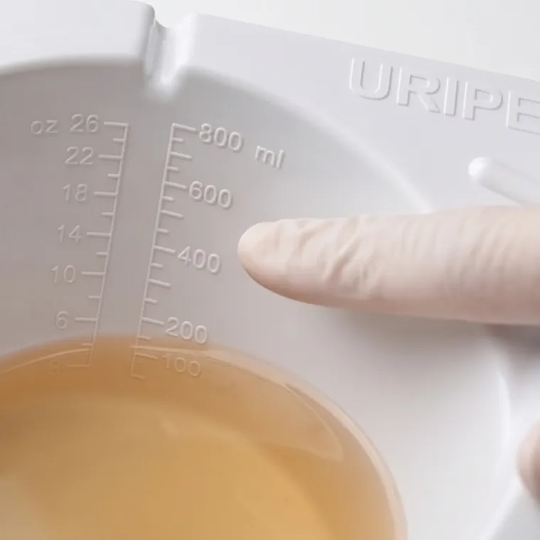
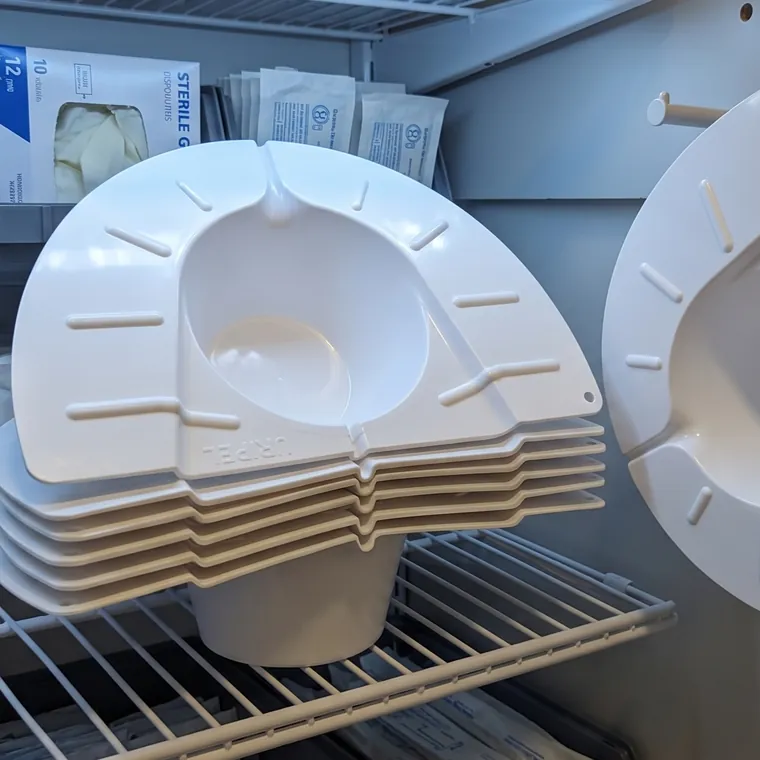
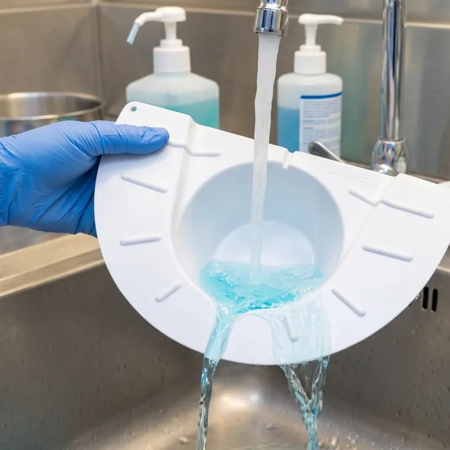

Medición integrada
La escala graduada en ml y oz viene moldeada en el propio recipiente. Se lee el volumen directamente, sin trasvasar a un jarro medidor aparte.
URIPEL es un dispositivo que busca simplificar y devolver la dignidad al control diario de la orina, sin importar la condicion o edad de la persona que cuida su salud.
Los riñones mantienen el equilibrio de agua, sales y minerales del cuerpo, y laLa orina es una de las primeras señales que el médico sigue de cerca. Por eso muchos tratamientos piden llevar la cuenta todos los días, una rutina tediosa que suele resolverse con recipientes improvisados y cálculos a ojo.
Ese control diario suele ser la parte más incómoda del tratamiento: para el paciente, que siente que pierde intimidad, y para quien lo acompaña, que tiene que resolverlo todos los días.
URIPEL lo vuelve un gesto simple.
Hospitales, clínicas, sanatorios y geriátricos que llevan el control diario de los pacientes que se movilizan por sus propios medios.
Seguimientos que duran semanas o meses. El paciente anota sus propios valores en el baño de su casa y llega a la consulta con el registro hecho.
Cuando hay que llevar una muestra: se junta en el mismo recipiente y se pasa al frasco por la ranura vertedora, sin contacto ni insumos aparte.
Una pieza única de ABS, sin partes móviles ni consumibles: se coloca, se retira, se vuelca y se lava.

La escala graduada en ml y oz viene moldeada en el propio recipiente. Se lee el volumen directamente, sin trasvasar a un jarro medidor aparte.

Las unidades se apilan una sobre otra y ocupan poco lugar en el depósito, el carro de enfermería o el botiquín de casa.

Se lava con agua y jabón como cualquier utensilio y vuelve a usarse. Menos residuos y menos costo por estudio frente al descartable.
Colocarlo, leer el valor y lavarlo lleva menos de un minuto. Tocá cada paso para ver la imagen.
Contanos si es para una institución de salud, para el control de alguien en casa o para un laboratorio, y te respondemos con lo que necesites.
Solicitar información